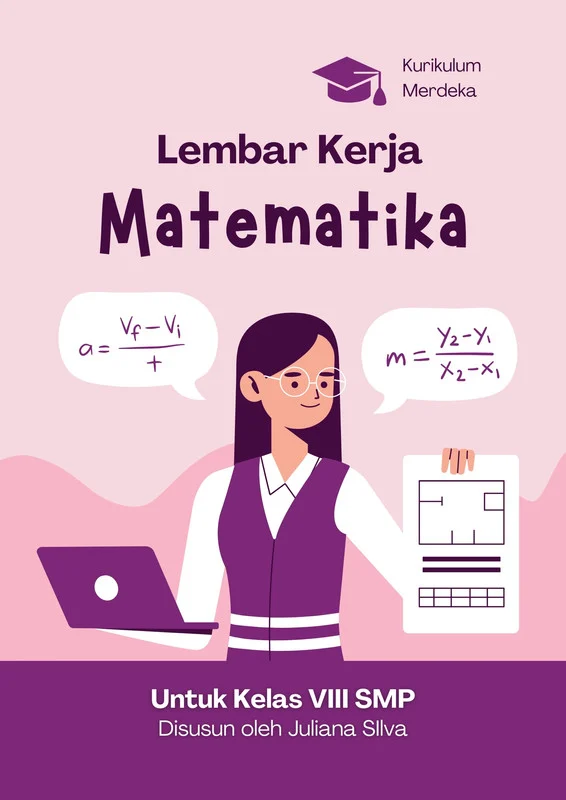

Senang Belajar Matematika
Rp70.000
Buku Senang Belajar Matematika adalah buku pembelajaran yang dirancang untuk membantu siswa memahami konsep matematika dengan cara yang mudah dan menyenangkan. Materi disusun secara bertahap, mulai dari dasar hingga tingkat yang lebih menantang, sehingga cocok untuk mendukung proses belajar di sekolah maupun belajar mandiri di rumah.
Setiap bab dalam buku ini dilengkapi dengan contoh soal yang jelas serta penjelasan langkah demi langkah. Bahasa yang digunakan sederhana dan komunikatif, sehingga siswa tidak merasa kesulitan dalam memahami rumus maupun konsep yang diajarkan.
Buku ini juga menyediakan berbagai latihan soal yang bervariasi, mulai dari soal pilihan ganda hingga soal cerita yang melatih kemampuan berpikir logis dan analitis. Dengan banyaknya latihan, siswa dapat mengasah kemampuan mereka secara konsisten.
Selain itu, terdapat rangkuman materi di akhir setiap bab yang membantu siswa mengingat kembali poin-poin penting. Rangkuman ini sangat berguna saat persiapan ulangan atau ujian.
Dengan tampilan yang menarik dan isi yang lengkap, Buku Senang Belajar Matematika diharapkan dapat menumbuhkan rasa percaya diri siswa dalam menghadapi pelajaran matematika serta membuat proses belajar menjadi lebih menyenangkan dan efektif.

Math Formula
Rp75.000
Math Formula adalah buku referensi lengkap yang berisi kumpulan rumus matematika dari tingkat dasar hingga lanjutan. Buku ini disusun secara sistematis agar mudah dipahami oleh siswa dari berbagai jenjang pendidikan.
Materi yang dibahas mencakup aljabar, geometri, trigonometri, kalkulus dasar, serta statistika. Setiap rumus dilengkapi dengan keterangan dan contoh penggunaan agar tidak sekadar dihafal, tetapi juga dipahami.
Tampilan buku dibuat ringkas dan terstruktur sehingga memudahkan pembaca menemukan rumus yang dibutuhkan dengan cepat. Cocok digunakan saat belajar maupun menjelang ujian.
Selain rumus utama, buku ini juga memuat tips dan cara cepat menyelesaikan soal matematika dengan lebih efisien dan tepat.
Dengan isi yang lengkap dan praktis, Math Formula menjadi pegangan ideal bagi siswa yang ingin meningkatkan kemampuan matematika mereka secara konsisten.

Buku Siswa Matematika
Rp80.000
Buku Siswa Matematika dirancang sesuai dengan kurikulum pendidikan terbaru untuk membantu siswa memahami materi secara bertahap dan terstruktur.
Setiap bab dimulai dengan penjelasan konsep dasar yang mudah dipahami, kemudian dilanjutkan dengan contoh soal dan pembahasan langkah demi langkah.
Latihan soal yang tersedia sangat bervariasi, mulai dari tingkat mudah hingga menantang, guna melatih kemampuan berpikir logis dan analitis siswa.
Di akhir bab terdapat rangkuman materi dan evaluasi untuk mengukur sejauh mana pemahaman siswa terhadap topik yang dipelajari.
Buku ini sangat cocok digunakan sebagai sumber belajar utama di sekolah maupun untuk belajar mandiri di rumah.

Buku Saku Matematika
Rp65.000
Buku Siswa Matematika dirancang sesuai dengan kurikulum pendidikan terbaru untuk membantu siswa memahami materi secara bertahap dan terstruktur.
Setiap bab dimulai dengan penjelasan konsep dasar yang mudah dipahami, kemudian dilanjutkan dengan contoh soal dan pembahasan langkah demi langkah.
Latihan soal yang tersedia sangat bervariasi, mulai dari tingkat mudah hingga menantang, guna melatih kemampuan berpikir logis dan analitis siswa.
Di akhir bab terdapat rangkuman materi dan evaluasi untuk mengukur sejauh mana pemahaman siswa terhadap topik yang dipelajari.
Buku ini sangat cocok digunakan sebagai sumber belajar utama di sekolah maupun untuk belajar mandiri di rumah.

American Math Dictionary
Rp90.000
American Math Dictionary adalah kamus istilah matematika berbahasa Inggris yang membantu pembaca memahami berbagai terminologi akademik secara mendalam.
Buku ini memuat definisi yang jelas dan sistematis untuk berbagai istilah penting dalam aljabar, geometri, trigonometri, dan bidang matematika lainnya.
Setiap istilah dijelaskan dengan bahasa yang mudah dipahami sehingga cocok bagi pelajar maupun mahasiswa.
Kamus ini juga membantu meningkatkan kemampuan bahasa Inggris akademik, khususnya dalam bidang matematika.
Dengan isi yang lengkap dan tersusun rapi, buku ini menjadi referensi penting bagi siapa saja yang ingin memperdalam pemahaman matematika dalam bahasa internasional.

Learning Math
Rp70.000
Learning Math adalah buku pembelajaran yang dirancang untuk membuat matematika terasa lebih menyenangkan dan tidak menakutkan.
Materi disampaikan dengan pendekatan sederhana dan ilustrasi yang menarik agar siswa lebih mudah memahami konsep yang diajarkan.
Setiap bab dilengkapi contoh soal serta latihan yang membantu siswa mengasah kemampuan berpikir kritis dan logis.
Buku ini juga memberikan motivasi belajar agar siswa lebih percaya diri dalam menghadapi pelajaran matematika.
Dengan metode yang interaktif dan komunikatif, Learning Math membantu siswa membangun dasar matematika yang kuat untuk jenjang berikutnya.

Jelajah Matematika
Rp85.000
Jelajah Matematika adalah buku pembelajaran yang mengajak siswa memahami konsep matematika melalui pendekatan eksploratif dan menyenangkan.
Materi disusun secara bertahap dengan contoh konkret yang dekat dengan kehidupan sehari-hari sehingga lebih mudah dipahami.
Setiap bab dilengkapi aktivitas dan latihan soal untuk melatih kemampuan berpikir logis serta pemecahan masalah.
Ilustrasi dan penyajian yang menarik membantu siswa tidak merasa bosan saat belajar.
Buku ini cocok digunakan sebagai pendamping belajar di sekolah maupun sebagai bahan latihan mandiri di rumah.

Modul Matematika
Rp75.000
Modul Matematika dirancang sebagai bahan ajar sistematis yang membantu siswa memahami materi sesuai kurikulum yang berlaku.
Setiap modul memuat tujuan pembelajaran, penjelasan konsep, contoh soal, dan latihan terstruktur.
Bahasa yang digunakan sederhana dan komunikatif sehingga mudah dipahami oleh berbagai tingkat kemampuan siswa.
Terdapat evaluasi di akhir pembahasan untuk mengukur pemahaman dan perkembangan belajar.
Modul ini sangat cocok digunakan sebagai sumber belajar utama maupun pendamping dalam proses pembelajaran di kelas.

Matematika Diskret Teknik
Rp95.000
Matematika Diskret Teknik adalah buku yang membahas konsep-konsep dasar matematika diskret yang sering digunakan dalam bidang teknik dan informatika.
Materi meliputi logika matematika, himpunan, relasi, fungsi, kombinatorika, serta teori graf.
Penjelasan disertai contoh penerapan dalam dunia teknik dan komputasi sehingga lebih relevan dengan kebutuhan mahasiswa.
Latihan soal disusun dari tingkat dasar hingga lanjutan untuk memperkuat pemahaman konsep.
Buku ini cocok bagi mahasiswa teknik yang ingin membangun dasar analisis dan pemecahan masalah secara sistematis.

Modul Ajar Matematika
Rp80.000
Modul Ajar Matematika merupakan panduan pembelajaran yang dirancang untuk membantu guru menyampaikan materi secara efektif dan terstruktur.
Di dalamnya terdapat tujuan pembelajaran, langkah-langkah kegiatan, serta metode evaluasi yang jelas.
Materi disajikan dengan pendekatan yang mendorong siswa aktif berpikir dan berdiskusi.
Modul ini juga dilengkapi contoh soal dan penugasan yang dapat disesuaikan dengan kebutuhan kelas.
Dengan penyusunan yang sistematis, Modul Ajar Matematika membantu menciptakan proses belajar yang lebih terarah dan efektif.